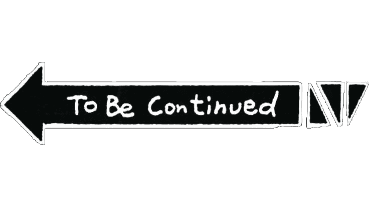
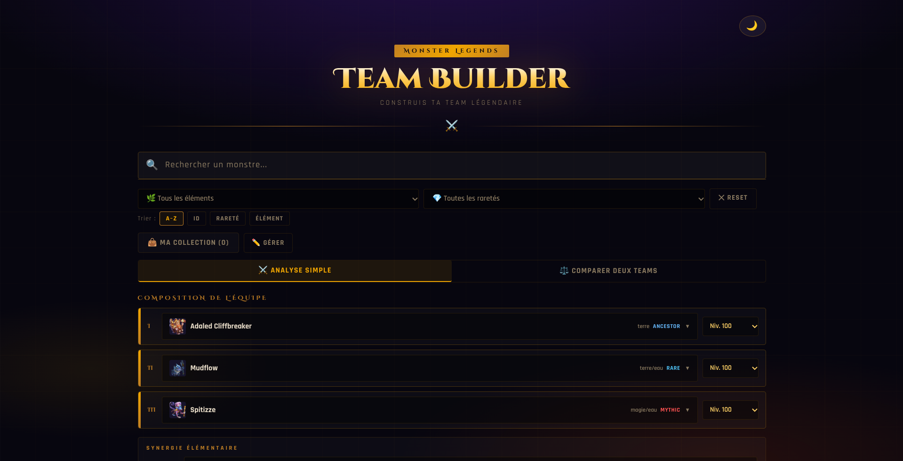

Étudiant en deuxième année de BUT MMI à Lannion, je recherche un stage du 5 avril au 18 juin
2027 en graphisme, illustration ou web créatif. J'aime transformer une idée en réalisation
visuelle, de la première piste au résultat final.
Quelques repères sur ce qui nourrit mon univers : le dessin, les images en mouvement,
les outils numériques, et l'envie de raconter quelque chose visuellement.
portrait rapide
J'aime énormément dessiner ce qui m'entoure. J'ai commencé par de simples dessins
d'enfants comme tout le monde. Depuis le collège, j'explore de nombreux médias
artistiques.
Aujourd’hui, je me concentre surtout sur le dessin traditionnel au crayon. J’apprends
l’anatomie pour mieux comprendre les proportions, les formes et le mouvement du corps, tout
en développant mon sens de l’observation et ma précision.
Mon rêve : mêler mes talents en dessin avec des domaines créatifs et visuels. Grâce aux
outils numériques et à mes connaissances en développement, c'est possible !
Moi, Luka Dombre, je suis étudiant en deuxième année de BUT Métiers du Multimédia et de
l'Internet à Lannion. Retenez bien ce nom !

toujours une idée en cours
Chapitre 02 — Projets
Mes projets
Quelques projets de mon book. Chaque fiche détaille mon rôle, les outils utilisés
et le résultat.
planche 01

Développement web / jeu vidéo
Création d'un team builder Monster Legends
Outil web pour composer et analyser des équipes dans Monster Legends.
J'ai conçu et développé un outil web consacré à Monster Legends. Il
accompagne la création d'une équipe, de la recherche des monstres jusqu'à l'analyse
et à la comparaison de plusieurs compositions.
Rôle personnel
Conception de l'interface et développement du team builder
Retrouver un monstre grâce à la recherche et aux filtres
Composer une équipe et consulter les informations de ses membres
Examiner les statistiques et la synergie élémentaire de l'équipe
Comparer des compositions et consulter des recommandations de runes
Enregistrer, partager et retrouver les équipes dans l'historique
Intention de conception
Réunir la composition d'équipe et son analyse dans un même outil
Permettre de passer d'une première sélection à la comparaison de plusieurs options
Résultat
Un team builder interactif, accessible en ligne, avec des fonctions de recherche,
d'analyse, de comparaison et de sauvegarde.
Accueil et recherche des monstresComposition d'une équipeAnalyse des statistiques et des synergiesDétail des résultats et recommandations
UREI est un projet d'équipe autour d'un jeu de plateforme. Son
univers et son histoire prennent forme à travers les personnages, les décors, les dialogues et
des cinématiques animées en 2D. Le projet est toujours en cours.
Rôle personnel
Direction artistique, sprites en pixel art et animation 2D
Définir une direction artistique autour des palettes, des environnements et de
l'époque
Créer les sprites du personnage et des éléments de décor en pixel art
Décliner les sprites en animations pour donner vie aux déplacements
Réaliser une animation 2D d'introduction au jeu
Faire passer le récit par l'image
Utiliser les décors et les cinématiques pour installer l'univers du jeu
Travailler le mouvement à travers l'animation 2D et le pixel art
Concevoir des éléments visuels cohérents avec le projet collectif
État du projet
Des sprites animés, des décors et une animation d'introduction réalisés
Un univers visuel en développement avec le reste de l'équipe
Animation du personnage UREI au reposAnimation de course du samouraïAnimation de marche de profilAnimation de marche de faceDécor de forêt en pixel art
Pendant les cours d'anglais, nous avons travaillé en groupe à la création
de pages pour plusieurs magazines. Il fallait rechercher des informations, rédiger en anglais,
sélectionner des visuels et organiser la mise en page, avec un temps limité et une présentation
orale à préparer.
Rôle personnel
Recherche, rédaction en anglais et mise en page
Logiciels / outils
Canva, Google Docs
Durée
Projets réalisés sur plusieurs séances au cours de l'année.
Contexte
Projet scolaire en cours d'anglais
Missions
Rechercher et sélectionner des informations pertinentes selon le sujet
Rédiger les contenus en anglais et choisir des images pour les illustrer
Organiser les textes et les images dans les pages avec Canva
Présenter les créations à l'oral en groupe
Compétences mobilisées
Associer recherche documentaire, rédaction et mise en page
Adapter le contenu et l'organisation aux contraintes de temps
Collaborer et répartir le travail au sein du groupe
Présenter et expliquer un résultat éditorial à l'oral
Résultat
Plusieurs pages de magazine réalisées et présentées à l'oral
Une pratique mêlant recherche, rédaction en anglais et mise en page
En équipe de cinq, nous avons réalisé un court métrage pour sensibiliser à la
problématique des déchets. Le format imposait une durée maximale de 1 minute 40 et pas plus de
10 plans : il fallait donc construire une idée claire et la traduire en un tournage concis.
Rôle personnel
Scénario, storyboard, cadrage et script
Logiciels / outils
Canon 90D, Perche, Mixette, DaVinci Resolve
Durée
Projet réalisé sur environ 2 mois, de la phase de pré-production jusqu’au rendu final du
film.